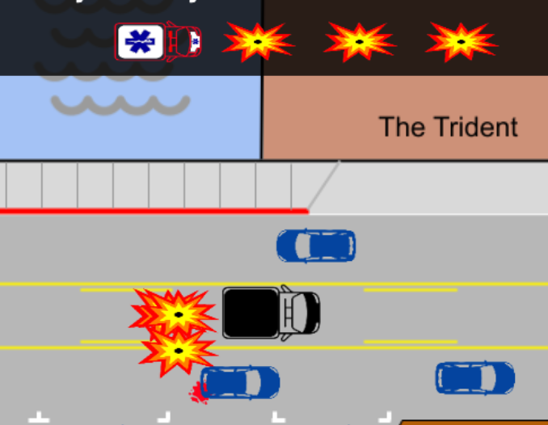

Better Bridgeway Builder
Emergency Vehicles Blocked by Center Lane Deliveries
Larger vehicles parked in the center lane complicate passage for
large emergency vehicles like fire trucks and ambulances that must
use Bridgeway to service the south end of Sausalito.
Hint
 When an ambulance periodically appears, all other vehicles pull
over. The ambulance will pass when a lane has enough clearance, but
will crash into the obstacle in its path if no clear path can be
found.
When an ambulance periodically appears, all other vehicles pull
over. The ambulance will pass when a lane has enough clearance, but
will crash into the obstacle in its path if no clear path can be
found. Nobody wins when an ambulance is blocked.